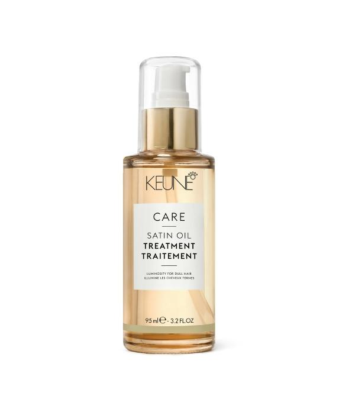
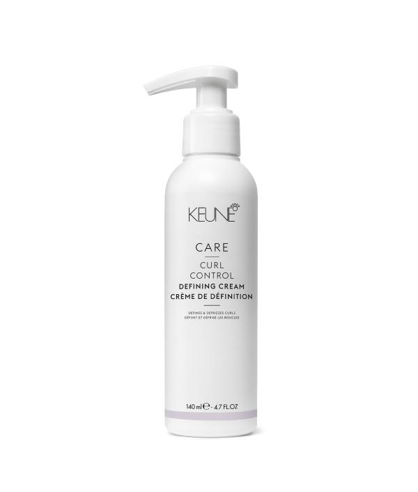
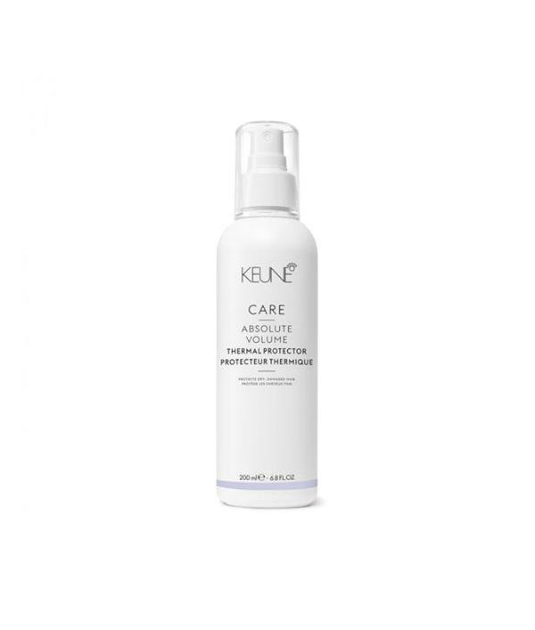

-

Шампунь «Шелковый уход» — CARE SATIN OIL SHAMPOO KEUNE, 300 мл, 1000 мл
Комплекс Satin Oil линии Care основан на уникальном сочетании набора благородных масел и природных минералов. Комплекс предназначен для тусклых и сухих волос и воздействует на все слои волоса: укрепляет структуру, увлажняет и придает здоровый блеск, а также обеспечивает оптимальный баланс для здоровья кожи головы. Масло моной и масло семян папайи проникают в самую серединку волоса и восстанавливают сухие и повреждённые участки. Сладкое миндальное масло увлажняет верхние слои, расположенные за кутикулой. Масло янгу смягчает, разглаживает и защищает волосяной ствол благодаря натуральным антиоксидантам, Омега 6 и 9, жирным кислотам. Дополнительное питание и оптимальный баланс влажности достигается благодаря природным минералам, входящие во все продукты линии Care.
-
Кондиционер «Шелковый уход» CARE SATIN OIL CONDITIONER KEUNE, 250 мл, 1000 мл
Комплекс Satin Oil линии Care основан на уникальном сочетании набора благородных масел и природных минералов. Комплекс предназначен для тусклых и сухих волос и воздействует на все слои волоса: укрепляет структуру, увлажняет и придает здоровый блеск, а также обеспечивает оптимальный баланс для здоровья кожи головы. Масло моной и масло семян папайи проникают в самую серединку волоса и восстанавливают сухие и поврежденные участки. Сладкое миндальное масло увлажняет верхние слои, расположенные за кутикулой. Масло янгу смягчает, разглаживает и защищает волосяной ствол благодаря натуральным антиоксидантам, омега 6 и 9, жирным кислотам. Дополнительное питание и оптимальный баланс влажности достигается благодаря природным минералам, входящие во все продукты линии Care.
-
Маска Шелковый уход — CARE SATIN OIL MASK KEUNE, 50мл, 200 мл, 500мл
Нидерландский косметический бренд Keune, неизменно заботясь о сохранении красоты и здоровья вашей шевелюры, разработал уникальное средство, обладающее высокой эффективностью в восстановлении и щадящим действием. Care Line Satin Oil Treatment — отличный препарат для сухих волос. Он насыщает их полезными масляными компонентами, которые в нужных пропорциях собраны в инновационной формуле этой маски. Кроме того, она содержит ценные природные минералы. Ваши волосы подпитываются изнутри, делаясь мягкими, гладкими и струящимися, словно жидкий шелк. Маска Шелковый уход отлично подойдет в качестве лечебной для пересушенной и ослабленной шевелюры или же станет дополнением уходовой линейки Care Line Satin Oil для любительниц средств из этой серии.
-
Шампунь»Экстра защита» от солнца — CARE SUN SHIELD SHAMPOO KEUNE, 300 мл
Защита от солнца сухих, пористых и поврежденных волос. Для мягкого очищения и увлажнения волос и тела. Природные минералы, провитамин В5 и комплекс «Анти-хлор» предотвращают воздействия UV-лучей, удаляют хлор и морскую соль, увлажняя волосы, кожу головы и тело.
-

Кондиционер «Экстра Защита» — CARE SUN SHIELD CONDITIONER KEUNE, 250 мл
CARE SUN SHIELD CONDITIONER воздействует на сухие и пористые локоны, которые часто подвергаются опасному воздействию солнечных лучей. Масло ши обеспечивает деликатное кондиционирование и оживление волос, насыщает волосяные волокна всеми полезными ингредиентами, а также улучшает общую структуру прядей, позволяя им стать более крепкими и более шелковистыми. Активные УФ-фильтры, проникают глубоко в структуру каждого локона и остаются внутри даже после смывания кондиционера с волос, тем самым обеспечивая сверхнадежную защиту. А инновационные полимеры придают прядям изумительную гладкость и существенно облегчают расчесывание.
-

Масло «Экстра защита» — CARE SUN SHIELD OIL KEUNE, 140 мл
Защитное масло для волос и тела с УФ-фильтрами, Витамином E и увлажнителями. Масло «Экстра защита» обеспечивает SPF 8, водоустойчиво. Свалан, натуральное масло оливы, Ориназол из риса и витамин E защищают волосы и тело, придают волосам объем и блеск. Фактор защиты 8 предохраняет волосы и кожу от повреждения УФ — излучением; Сквалан Масло образует тончайшую пленку вокруг волоса, защищая его от негативных внешних воздействий и от потери влаги. Витамин E поддерживает эффект Ориназола , придает волосам объем и блеск. Масло сохраняет яркость цвета. Рекомендуется для волос и кожи, находящихся на солнце.
-

Шампунь «Кератиновый комплекс» — CARE KERATIN SMOOTH SHAMPOO KEUNE, 80мл, 300 мл, 1000 мл
Эффективное восстановление прядей возможно благодаря особой формуле этого шампуня. Продукт обогащен ценным провитамином В5, который призван восстановить естественный баланс влажности локонов. Также он влияет на увлажнение кожного покрова головы, избавляя от неприятного ощущения сухости и зуда. Наличие в составе шампуня уникального комплекса Quat Complex помогает обеспечить полноценную защиту прядей от повреждений и неблагоприятного воздействия окружающей среды.
-
Кондиционер «Кератиновый комплекс» — CARE KERATIN SMOOTH CONDITIONER KEUNE, 80мл, 250 мл, 1000 мл
Кератин, на основе которого разработан кондиционер, проникает глубоко в основу каждого волоска и сглаживает его изнутри, делая локоны шелковистыми и послушными. Масло ши устраняет много проблем с волосами, например, ломкость, посеченность, выпадение и перхоть. Создатели кондиционера также добавили в него уникальный комплекс Quat Complex, специально разработанный компанией Keune. Благодаря ему волосы будут полностью защищены от вредоносного воздействия солнца, утюжков и фена, и даже от механического воздействия, например, слишком частого расчесывания. Вместе с кодиционером «Кератиновый комплекс», разработанным фирмой Keune в Нидерландах, ваши волосы станут гораздо красивее и эластичнее.
-

Маска «Кератиновый комплекс» — CARE KERATIN SMOOTH MASK KEUNE, 50 мл, 200 мл, 500мл
Keratin Smooth Mask — интенсивная маска для жестких и поврежденных волос, восстанавливает силу и блеск. Как следует из названия, в неё входит кератин, волокнистый белок, содержащийся в ваших волосах. Эта маска идеально подходит для сухих или поврежденных волос. Пептиды погружаются глубоко под поверхность каждой нити, чтобы восстановить повреждения, в то время как кератин укрепляет и помогает предотвратить поломку. Эта роскошная процедура обогащает волосы кератином, значительно улучшая их силу и добавляя красивый блеск.
-

Двухфазный-спрей Кератиновый комплекс — CARE KERATIN SMOOTH 2-PHASE SPRAY KEUNE, 200 мл
Мгновенно кондиционирующий спрей распутывает волосы, регулирует балан влажности, укрепляет и выпрямляет волосы. Предотвращает пушистость, облегчает расчесывание. Обогащает волосы кератином и технологией силсофт, которые регулируют баланс влаги, одновременно придавая силу и разглаживая волосы. Низкий уровень рН смягчает кутикулу и усиливает блеск волос.
-
Эликсир кератиновий спрей — CARE MIRACLE ELIXIR KERATIN SPRAY KEUNE, 140 мл
Роскошный спрей для домашнего ухода на основе кератина продлевает результаты профессионального лечения Miracle Elixir. Это помогает поддерживать начальный уровень мягкости после процедуры даже после 5 помывок головы.
-

Масло для тонких и нормальных волос «Шелковый уход» — CARE SATIN OIL — OIL TREATMENT KEUNE, 95 мл
Препарат кондиционирует, придает волосам сияние, облегчает укладку, защищает локоны от солнечных лучей и горячего воздуха. В основе комплекса Satin Oil — благородные масла и природные минералы. Препарат укрепляет волосы, увлажняет их, придает здоровый блеск, нормализует кожу головы. Масло маракуйи отдает вашим волосам свои уникальные витамины, укрепляет их, защищает от сечения и ломкости; масла моной и семян папайи увлажняют волос и восстанавливают его структуру; масло сладкого миндаля щедро питает волосы, успокаивая кожу головы; масло янгу хорошо смягчает, защищая волосы от выцветания и выпадения; Природные минералы дополняют действие великолепных экзотических масел, обеспечивая волосам дополнительное питание.
-

Крем-филлер Основное питание / CARE Vital Nutr Porosity Filler 50 мл
Крем-наполнитель Основное питание для уменьшения пористости волос Средство Vital Nutrition Porosity Filler от бренда Keune — концентрированный крем, обогащенный керамидами и протеинами пшеницы, которые усиливают волокона волоса и улучшают его внутреннюю структуру. Nutri-Injection Technology образует защитный слой вокруг поврежденных частей волос, поэтому волосы восстанавливаются и снова выглядят здоровыми. Результат: Крем-наполнитель Основное питание обновляет и оживляет поврежденные волосы.
-

Миракл Эликсир Бустер Конц.кератиновый бустер/ MIRACLE ELIXIR KERATIN BOOSTER KEUNE, 140 мл
Концентрированный кератиновый бустер. Concentrated Keratin Booster от бренда Keune — глубоко увлажняющий и восстанавливающий уход для поврежденных волос. После применения ухода «Miracle Elixir», богатого кератином, внутренняя структура поврежденных волос восстанавливается на 80%. Как результат, в 2 раза больше мягкости волос. Состоит из сложного кератинового микса (Keratin, Hydrolyzed keratin, Oxidized Keratin), который благодаря Zipper технологии (технология молнии) создает эффект натурального кератина в волосе и восстанавливает волосы снаружи и изнутри.
-

Спрей защита от влаги STYLE HUMIDITY SHIELD №13 KEUNE, 200 мл
Спрей защита от влаги STYLE HUMIDITY SHIELD, No 13. Легкий невесомый завершающий спрей для волос. Удерживает волосы от пушистости при влажности на 24 часа. Новый аромат, содержит УФ фильтр.
-

Лосьон для объёма STYLE BLOWOUT GELEE №56 KEUNE, 200 мл
Хотите добавить объем и сделать волосы сияющим? Начните с прикосновения N°56 Blowout Gelée. Созданный для нормальных и густых волос, он защищает волосы от тепла до 230 ° C (450 ° F), не оставляя пленки. Активируемый при нагревании лосьон для объемных волос с натуральным блеском. Обладает новым фирменным ароматом и УФ-фильтром. Свойства: термозащита делает волосы послушными и мягкими не липкая формула не оставляет пленки на волосах обеспечивает тепловую защиту до 230°C и УФ-фильтр. Фиксация — 5/10, блеск — 6/10.
-
Спрей для быстрой укладки STYLE INSTANT BLOWOUT №37 KEUNE, 200 мл
Спрей для быстрой укладки STYLE INSTANT BLOWOUT, No 37. Двухфазный спрей полирует волосы, придаёт силу и сияние. Обеспечивает надёжную термозащиту. Создаёт основу для последующих стайлинговых средств. Сокращает время сушки феном. Содержит УФ фильтр. Защищает от воздействия температуры до 230°C. Новый аромат.
-
Гель бриллиантин STYLE BRILLIANTINE GEL №29 KEUNE, 75 мл
Обеспечивает мягкую фиксацию, суперблеск и подчеркивает текстуру. Может быть использован для создания пластичного эффекта мокрых волос. Не сушит волосы и контролирует их пушистость. Двухслойная система защиты блокирует внешние негативные воздействия, UV-лучи и свободные радикалы.
-

Сыворотка блеск STYLE DEFRIZZ SERUM №17 KEUNE, 30 мл
Сыворотка для блеска волос STYLE DEFRIZZ SERUM, No17. Выглаживающая кремообразная сыворотка мгновенно снимает пушистость и усиливает блеск, не оставляя волосы жирными. Сыворотка обеспечивает термозащиту. Волосы становятся мягкими, гладкими и блестящими. Содержит УФ фильтр.
-

Сухой кондиционер STYLE DRY CONDITIONER №15 KEUNE, 200 мл
Кондиционер сухой STYLE DRY CONDITIONER, No15. Легкий невесомый спрей кондиционер освежает волосы, делая их чистыми и объемными по всей длине, придает мягкость волосам. Помогает распутать волосы. Содержит УФ фильтр. Новый аромат.
-

Шампунь сухой освежающий STYLE DRY SHAMPOO №11 KEUNE, 200 мл
Шампунь сухой освежающий STYLE DRY SHAMPOO, No11. Освежает волосы и придает объем в одно нанесение. Волосы выглядят чистыми и объемными по всей длине. Удаляет жир с волос, обладает абсорбирующим свойством, содержит УФ фильтр. Новый аромат.
-

Сухая паста STYLE DRY PASTE №41 KEUNE, 75 мл
Паста сухая STYLE DRY PASTE, No 41. Сухая паста для придания матовой текстуры. Абсорбирует избыточное выделение сальных желез. Содержит УФ фильтр. Новый аромат.
-
Воск формирующий STYLE FORMING WAX №57 KEUNE, 75 мл
Воск формирующий средний фиксации STYLE FORMING WAX, No57. Эластичный воск, придает волосам естественный блеск. Средний фактор фиксации. Добавляет плотность и естественный блеск коротким волосам. Подходит для создания остроконечных причёсок. Содержит УФ фильтр. Нейтральный аромат.
-

Глина скульптурирующая STYLE SCULPTING CLAY №82 KEUNE, 12,5 мл, 75 мл
Глина скульптурирующая STYLE SCULPTING CLAY, No 82. Матирующая глина сильной фиксации. Для придания матовой текстуры, подходит для волос короткой и средней длины. Содержит УФ фильтр.
-

Крем матирующий STYLE MATTE CREAM №62 KEUNE, 75 мл
Крем матирующий STYLE MATTE CREAM, No 62. Матирующий стайлинг подчёркивает текстуру и придаёт волосам плотность. Средний фактор фиксации. Содержит УФ-фильтр. Нейтральный аромат.
-

Лак неаэрозольный STYLE LIQUID HAIRSPRAY №97 KEUNE, 200 мл
Лак для волос неаэрозольный STYLE LIQUID HAIRSPRAY, No 97. Лак для волос подчёркивает текстуру и обеспечивает сильную фиксацию. Лак может быть использован в качестве текстурайзера, чтобы подчеркнуть отдельные пряди, создать эффект мокрых волос, а также в качестве лака для волос, чтобы зафиксировать результат укладки. Содержит УФ фильтр.
-
Лак для волос софт STYLE SOFT SET SPRAY №57 KEUNE, 300 мл"
Лак для волос неаэрозольный STYLE LIQUID HAIRSPRAY, No 97. Лак для волос подчёркивает текстуру и обеспечивает сильную фиксацию. Лак может быть использован в качестве текстурайзера, чтобы подчеркнуть отдельные пряди, создать эффект мокрых волос, а также в качестве лака для волос, чтобы зафиксировать результат укладки. Содержит УФ фильтр.
-

Мусс софт STYLE SOFT MOUSSE №44 KEUNE, 200 мл
Лак для волос софт STYLE SOFT SET SPRAY, No 57. Невесомый лак средней фиксации для завершения образа и работы во время создания причесок. Легко перечесывается. Содержит УФ фильтр. Новый аромат.
-
Воск-спрей STYLE SPRAY WAX №46 KEUNE, 200 мл
Воск-спрей STYLE SPRAY WAX No46, без масляной основы визуально увеличивает количество волос и объем без утяжеления. Позволяет создавать небрежную, проработанную текстуру. Отделяет пряди для создания подвижности волос. Содержит УФ фильтр.
-

Спрей морские брызги STYLE SALT MIST №62 KEUNE, 200 мл
Спрей морские брызги STYLE SALT MIST, No 62. Текстурирующий спрей, содержит кристаллы соли. Придает волосам пляжный и матовый эффект. Подчеркивает текстуру. Подходит для фиксации любой причёски. Содержит УФ фильтр. Новый аромат.
-
Спрей для укладки утюжками STYLE HOT IRON SPRAY №27 KEUNE, 200 мл
Спрей для укладки утюжками STYLE HOT IRON SPRAY, No 27. Спрей-термозащита при укладке горячими инструментами (утюжки, плойки). Придает волосам дополнительный уход, оставляя их мягкими, придает естественный блеск. Защищает от воздействия температуры до 230°C. После использования спрея на 92% уменьшение ломкости волос. Содержит УФ фильтр. Новый аромат.
-
Волокнистый воск STYLE SHAPING FIBERS №38 KEUNE, 75 мл
Воск волокнистый для укладки волос STYLE SHAPING FIBERS, No38. Волокнистый воск-помада для эластичной укладки. Продукт создаёт движение в волосах специальными волокнами, подходит для выделения прядей, оставляет волосы блестящими и эластичными. Придает волосам сильный блеск. УФ фильтр. Новый аромат.
-
Лак для волос сильной фиксации STYLE HIGH IMPACT SPRAY №106 KEUNE, 300 мл< h2>
Лак для волос сильной фиксации STYLE HIGH IMPACT SPRAY, No106. Лак максимальной фиксации. Этот продукт был разработан специально для моделирования волос после нанесения. Сохраняет фиксацию в течение 24 часов и способствует защите текстуры от влажности. Содержит УФ фильтр. Новый аромат.
-
Крем выпрямляющий STYLE STRAIGHT CREAM №57 KEUNE, 200 мл
Крем выпрямляющий термозащитный STYLE STRAIGHT CREAM, No 57. Выглаживает химически завитые, натурально вьющиеся и пушистые волосы до следующего мытья. Тепловое воздействие усиливает действие крема. Волосы становятся прямыми, послушными и блестящими, без какого-либо химического воздействия. Средство термозащиты. Содержит УФ фильтр.
-
Крем уплотняющий STYLE THICKENING CREAM №55 KEUNE, 200 мл
Крем с усиленной термозащитой до 230 °С для придания объема и движения волосам, содержит УФ фильтр. Подходит для естественного высыхания волос. Свойства: придает густоту и объем, делая волосы наполненными и плотными, возвращает жизнь тонким, ломким волосам обеспечивает термозащиту. Степень фиксации: 5/10. Степень блеска: 5/10
-
Гель ультра для эффекта мокрых волос STYLE ULTRA GEL №88 KEUNE, 200 мл, 50 мл
Гель ультра для эффекта мокрых волос. Сильная фиксация для эффекта мокрых волос или другой укладки. Гель придаёт волосам плотность, объём и блеск. Содержит УФ фильтр.
-
Пудра для объема STYLE VOLUME POWDER №71 KEUNE, 7 мл
Легкая невесомая пудра для придания объема от корней волос с матирующим эффектом. Содержит УФ фильтр. Свойства: — обволакивает волосы — создает матирующий эффект — придает объем от корней волос — позволяет изменить стиль стрижки. Степень фиксации: 7/10 Степень блеска: 1/10
-

Keune Стиль Пудра-спрей STYLE PRECISION POWDER №31, 8 мл
Пудра-спрей STYLE PRECISION POWDER, No31. Пудра-спрей для более детального и точечного нанесения. Придает максимальный объем и создает матирующую текстуру. Содержит УФ фильтр.
-
Крем для ухода и укладки вьющихся волос STYLE CURL CREAM №25 KEUNE, 200 мл
Крем для ухода и укладки вьющихся волос STYLE CURL CREAM, No25. Крем для вьющихся волос создаёт четкий завиток. Он разделяет и фиксирует локоны, обладает термозащитой и не утяжеляет их. Подходит для натуральных вьющихся волос любой длины. Новый аромат, содержит УФ фильтр.
-
Шампунь Тинта колор — CARE TINTA COLOR SHAMPOO KEUNE, 80мл, 300 мл, 1000 мл
Премиальная формула ухода за окрашенными волосами включает в себя уникальную технологию тройной защиты цвета — шёлковые протеины, защита от УФ излучения и стабилизатор цвета LP300. Насыщенная формула восстанавливает и питает волосы, надолго сохраняя блеск после окрашивания. Соламер выполняет функцию барьера УФ А и УФ В излучения. Экстракт семян подсолнечника нейтрализует свободные радикалы, сохраняя стойкость цвета. Полимеры способствуют более легкому расчесыванию. Шелковые протеины придают мягкость, шелковистость и блеск волосам. Без сульфатов, парабенов и глютена.
-
Кондиционер Тинта колор — CARE TINTA COLOR CONDITIONER KEUNE, 80мл, 250 мл, 1000 мл
Премиальная формула ухода за окрашенными волосами включает в себя уникальную технологию тройной защиты цвета — шёлковые протеины, защита от УФ излучения и стабилизатор цвета LP300. Насыщенная формула восстанавливает и питает волосы, надолго сохраняя блеск после окрашивания. Соламер выполняет функцию барьера УФ А и УФ В излучения. Экстракт семян подсолнечника нейтрализует свободные радикалы, сохраняя стойкость цвета. Полимеры способствуют более легкому расчесыванию. Шелковые протеины придают мягкость, шелковистость и блеск волосам. Без сульфатов, парабенов и глютена.
-
Шампунь серебрянный блеск — CARE SILVER SAVIOR SHAMPOO KEUNE, 300 мл, 1000 мл
Фиолетовый шампунь для серебристых волос. Silver Savior Shampoo борется с желтизной и сохраняет светлые, серебристые, белые или лавандовые оттенки свежими и яркими. Мощные пурпурные пигменты тонируют и охлаждают, провитамин B5 смягчает, а протеины пшеницы укрепляют и сгущают. Подсказка: вы даже можете использовать Silver Savior Shampoo, чтобы затонировать волосы после осветляющей процедуры.
-
Кондиционер серебрянный блеск — CARE SILVER SAVIOR CONDITIONER KEUNE, 250 мл, 1000 мл
Кондиционер Care Silver Savior Conditioner от Keune содержит фиолетовые пигменты для удаление нежелательной желтизны и придания холодного оттенка блондированным волосам. Провитамин В5 увлажняет и придает волосам гладкость и блеск. Подходит для натуральных и окрашенных блондинов, а также для седых, белых и серебристых оттенков.
-
Себо-регулирующий шампунь — CARE DERMA REGULATE SHAMPOO KEUNE, 300 мл
Себо-регулирующий шампунь CARE DERMA REGULATE SHAMPOO – глубоко очищающее средство для ухода за жирными волосами и кожей головы. Формула, обогащенная природными минералами и биосерой, успокаивает кожу головы и снижает активность сальных желез. Шампунь великолепно удаляет перхоть и предотвращает ее появлению. Ваши волосы становятся гладкими и шелковистыми без перхоти и жирных корней. Подарите своим волосам роскошный уход!
-
Шампунь против перхоти — CARE DERMA EXFOLIATE SHAMPOO KEUNE, 300 мл
Шампунь против перхоти. Exfoliating Shampoo Keune — идеальное средство против сухой и жирной перхоти. Оказывает мягкое антибактериальное действие. Удаляет хлопья перхоти с кожи головы. Устраняет зуд и раздражение кожи головы. Оздоравливает кожу головы, делает волосы блестящими.
-

Масло-молочко для волос «Шелковый уход»- Keune Care Satin Oil — Oil Milk, 140 мл
Масло-молочко для волос Шелковый уход Кене обладает легчайшей текстурой, которая обеспечивает моментальное впитывание. Уникальная формула с маслами и природными экстрактами наполняет волосы влагой, не утяжеляя их. Локоны приобретают мягкость восхитительное сияние.
-
Сыворотка для разглаживания волос с кератиновым комплексом — CARE KERATIN SMOOTH SERUM KEUNE, 25 мл
Средство является новинкой от компании Keune из лечебной линии Care. Обеспечивает сильный интенсивный уход за непослушными и повреждёнными волосами. Благодаря кератиновой формуле, сыворотка укрепляет волосы, делая из здоровыми, сильными и блестящими. Средство оказывает выглаживающее и укрепляющее действие. Активный кератин проникает глубоко в структуру волос, делает их шелковыми и послушными. Протеины, входящие в состав средства, восстанавливают структуру волос, укрепляя их и создавая защитный слой. С сывороткой CARE KERATIN SMOOTH SERUM ваши волосы будут выглядеть роскошно!
-
Крем шелковый глянец Кератиновый комплекс — CARE KERATIN SMOOTH SILKENING POLISH KEUNE, 50 мл
Крем разглаживает волосы, обеспечивая супер-блеск. Кератин — восстанавливает поврежденные волосы, улучшая структуру изнутри, защищает волосы от пагубного воздействия внешней среды, увлажняет, удерживая влагу внутри волоса, предотвращает сечение кончиков волос и возвращает эластичность и блеск волосам.
-
Шампунь «Контроль» для вьющихся волос — CARE CURL CONTROL SHAMPOO KEUNE, 300 мл, 1000мл
Специалисты голландского бренда Keune разработали эксклюзивный профессиональный шампунь Blend De-Frizz Shampoo. Богатая увлажняющая формула представленного средства создана с учетом всех уникальных особенностей непокорных вьющихся локонов и содержит высокоактивный мультивитаминный комплекс. Благодаря инновационным восстанавливающим компонентам, шампунь очень нежно очищает пряди, обеспечивает достаточное питание локонов и насыщение их энергетическими веществами. В результате структура волос меняется к лучшему – они становятся более эластичными, увлажненными, послушными, а также приобретают привлекательный блеск и сияние.
-
Кондиционер для вьющихся волос — CARE CURL CONTROL CONDITIONER KEUNE, 250 мл, 1000мл
Мягкие, упругие локоны со здоровым блеском. Глубоко увлажняющий кондиционер для мягких, упругих, вьющихся волос. Масло ши глубоко питает и придает блеск, в то время как наша система Curl Bounce System, основанная на древесине, идеально подходит для создания изящных, «танцующих» локонов. Этот прекрасный кондиционер глубоко увлажняет и добавляет мягкость, блеск и эластичность кудрям.
-
Маска для вьющихся волос — CARE CURL CONTROL MASK KEUNE, 200 мл, 500мл
Маска Keune Care Line Ultimate Control Frizzy Hair поможет «укротить» непослушные и сильно поврежденные волосы от внешних факторов. Хотя в названии и сказано, что маска для вьющихся волос, но можно расширить ее применение и порекомендовать ее для тонких волос, расчесывание которых, доставляет массу неудобств. Активные компоненты (природные минералы и силсофт) повышают прочность, давая возможность вернуть красоту и блеск, при этом восстанавливая пористые волосы, придавая им шелковистой гладкости. Маска обладает восстанавливающими и тонизирующими свойствами. Контроль над электризующимися волосами.
-

Крем для укладки волос «Контроль» — CARE CURL CONTROL DEFINING CREAM KEUNE, 140 мл
Крем для укладки волос CARE CURL CONTROL DEFINING CREAM — Формирующий крем, который очерчивает локоны, делая их мягкими, подвижными и блестящими. Снимает статику, имеет легкий фактор фиксации для поддержания формы локонов на весь день. Формула крема содержит компоненты, которые питают волосы, защищают их от механических повреждений и воздействия высоких температур. Делает локоны мягкими, блестящими и эластичными.
-
Спрей Уход за локонами — CARE CURL CONTROL BOOST SPRAY KEUNE, 140 мл
Активирующий спрей антифриз увлажняет и формирует локоны на весь день. Делает завитки более упругими и четкоочерчеными, блестящими и эластичными.
-
Шампунь против выпадения — CARE DERMA ACTIVATE SHAMPOO KEUNE, 300 мл, 1000 мл
Шампунь CARE DERMA ACTIVATE SHAMPOO предназначен для ухода за ослабленными волосами. Им непременно нужна поддержка, дайте им силу с шампунем Keune Care Line Activating Shampoo. В его состав входят экстракт тысячелистника и кофеин, которые замечательно лечат и укрепляет корни волос, улучшают кровообращение, устраняют воспалительные процессы. Биомины оживляют волосы и кожу головы. Витамин Н питает волосы, благодаря чему они становятся объемными и густыми. Биосера регулирует саловыделение. Таким образом, с помощью глубокого лечения и восстановления на клеточном уровне волосы быстро приобретают роскошный вид, становятся здоровыми, эластичными и сияющими.
-
Лосьон против выпадения волос — CARE Derma Activate Lotion 75 мл KEUNE, 75 мл
Если вы заметили, что количество ваших выпавших волос значительно превышает норму (в среднем 60-150 волосинок на день), важно определить причину, среди возможных: и питание, и стресс, и сбой в работе вашего организма. KEUNE CARE DERMA ACTIVATING LOTION — комплекс против выпадения, включающий технологию омоложения, которая основывается на действии липосомы, витамина Н, кофеина и таканала, что в сочетании обеспечит нормализацию темпов потери ваших волос и спровоцирует более активный рост новых. Лосьон стимулирует обменные процессы кожи головы. Система Derma Activating направлена на уход и оживление тонких, склонных к выпадению волос.
-
Уплотняющий спрей -CARE DERMA ACTIVA THICKENING SPRAY KEUNE, 200 мл
Комплекс помогает укрепить волосы и бороться с проблемой временного выпадения. Природные минералы поставляются непосредственно в клетки кожи головы, стимулируя метаболизм. Волосы становятся более густыми и объемными, восстанавливается нормальная работа кожи головы, ускоряется рост волос. Липосомы, витамин Н, кофеин и таканал укрепляют, стимулируют рост и увеличивают количество волос в фазе роста.
-
Кондиционер «Основное питание» — CARE VITAL NUTRITION CONDITIONER KEUNE, 80мл, 250 мл, 1000 мл
Изюминкой средства является его уникальный состав, который наполнен силами природных компонентов (масло дерева Ши), провитамин В5, катионоактивные полимеры, действие которых направлено на преодоление влияния негативных факторов окружающей среды и неполноценного питания. Кондиционер наполнит энергией ваши ломкие, сухие и пористые волосы, придав силы, густоты и блеска.
-
Маска для волос «Основное Питание» — CARE VITAL NUTRITION MASK KEUNE, 50 мл, 200 мл, 500мл
Основным компонентом восстанавливающей маски Intensive Hair Repair Care является комплекс Керавис. Он укрепляет все слои волос. Микропротеины пшеницы обладают способностью внедряться в структуру волос и оказывают на нее восстанавливающее действие. В состав интенсивного восстановителя Intensive Hair Repair Care входят также специальные полимеры. Они покрывают каждый волос невесомой пленкой, благодаря которой волосы разглаживаются, приобретают объем и оказываются защищенными от внешних воздействий. Интенсивный восстановитель Intensive Hair Repair Care за короткое время улучшает состояние даже сильно поврежденных волос. Он не делает волосы тяжелыми, облегчает процесс расчесывания, придает волосам мягкость, эластичность, блеск и силу. Маска Intensive Hair Repair Care подходит даже для волос азиатского и африканского типа.
-
Крем термозащита «Основное питание» — CARE VITAL NUTRITION THERMAL CREAM KEUNE, 140 мл
Крем термозащита «Основное питание» Кене предохраняет хрупкие и поврежденные волосы от воздействия высокой температуры. Пользуйтесь им перед горячей укладкой. Природные минералы существенно улучшают состояние пересушенных, слабых волос с повреждениями.
-
Протеиновый спрей для волос — CARE VITAL NUTRITION PROTEIN SPRAY KEUNE, 200 мл
Главная особенность представленного спрея — в его ультрасовременной формуле, насыщенной высокоэффективными органическими ингредиентами. Комбинация экстрактов зеленого чая и ромашки действует как антиоксидант, тем самым усиливая волосяные волокна и защищая их от различных травмирующих факторов. Насыщенное аргановое масло моментально устраняет поврежденные участки внутренней структуры локонов, повышая их устойчивость к раздражителям. Кондиционирующие компоненты способствуют оживлению прядей и насыщают их надлежащим количеством влаги, необходимой для повышения эластичности и прочности локонов. Активные протеины предотвращают появление пористости и посеченных кончиков, а также придают прядям атласную мягкость и роскошный жемчужный блеск.
-
Шампунь «Абсолютный объем» — CARE ABSOLUTE VOLUME SHAMPOO KEUNE, 300 мл, 1000 мл
Шампунь Keune CARE ABSOLUTE VOLUME SHAMPOO специально разработан для тех девушек, которые хотят придать волосам дополнительного объема. В состав средства входят минералы, протеины пшеницы и провитамин В5, которые укрепляют и утолщают структуру волоса.Это универсальное средство, которое подходит для всех типов волос: питает, мягко очищает волосы, придавая им блеск. Шампунь также нормализует работу сальных желез. Мягкая моющая основа позволяет использовать средство так часто, как это необходимо, в результате чего ваши волосы становятся легкими и шелковистыми. Благодаря своей уникальной формуле обладает тройным действием, придает волосам мягкость и сияние, одновременно укрепляя их. Волосы становятся более здоровыми, сильными и блестящими от корней до самых кончиков. Ощутите невероятный объем с шампунем Keune Care Line Volume!
-
Кондиционер «Абсолютный объем» для всех типов волос — CARE ABSOLUTE VOLUME CONDITIONER KEUNE, 250 мл, 1000 мл
Кондиционер «Абсолютный объем» Care Absolute Volume Conditioner от Keune разработан для ухода за тонкими волосами. Обогащен провитамином В5 и протеинами пшеницы. Активные ингредиенты укрепляют структуру волос и придают волосам объем без утяжеления. Care Absolute Volume Shampoo Keune укрепление структуры волос и придача объема благодаря протеинам пшеницы регулирование баланса влаги и уплотнение провитамином В5 облегчение расчесывания действиями четвертичных солей.
-
Мусс Абсолютный объем — CARE Absolute Volume Mousse KEUNE, 200 мл
Мусс для объема и кондиционирования, укрепляет и придает блеск волосам. Имеет в составе провитамин В5, также мусс можно использовать как термозащиту для волос. Защищает от высоких температур фена или утюжка.
-

Термозащита Абсолютный объем — CARE ABSOLUTE VOLUME THERMAL PROTECTOR KEUNE, 200 мл
Защищает волосы от высоких температур. Подходит для использования перед укладкой с использованием фена или утюжка. Спрей придает волосам блеск и объем, смягчает их.
-
Шампунь «Яркость цвета» — CARE COLOR BRILLIANZ SHAMPOO KEUNE, 80мл, 300 мл, 1000 мл
Технология «Инъекции питания» восстанавливает волосы, образуя защитный слой вокруг поврежденных участков, защищая их от дегидратации и негативных внешних воздействий, например, ультрафиолетовое излучение и химическое воздействие. Природные минералы, провитамин В5, и протеины пшеницы займутся глубокой регенерацией ваших волос на клеточном уровне. Использование шампуня Keune Care Line Color Shampoo предотвращает выцветание оттенка, что особенно важно, так как он обычно быстро вымывается, становясь непривлекательным. Также этот шампунь сделает ваши волосы сияющими и по-настоящему роскошными.
-
Кондиционер «Яркость цвета» — CARE COLOR BRILLIANZ CONDITIONER KEUNE, 80мл, 250 мл, 1000 мл
Представленный кондиционер состоит из высококачественных органических компонентов, обеспечивающих бережный, но сверхэффективный уход. Вещество соламер надежно защищает волосы от опасных UVA- и UVB-лучей. Масло семян подсолнуха уберегает пряди от утраты насыщенного цвета путем нейтрализации свободных радикалов. А шелковые протеины, проникая внутрь структуры волос, придают им волшебную шелковистость, атласную гладкость и блеск.
-
Маска для окрашенных волос «Яркость цвета» — CARE COLOR BRILLIANZ MASK KEUNE, 200 мл
Именитый голландский бренд Keune представляет инновационную восстанавливающую маску Care Line Color Brilliance, предназначенную для профессионального ухода за окрашенными локонами. Благодаря эксклюзивным органическим компонентам, она помогает изнутри увлажнить волосяные волокна и реставрировать их поврежденные участки, сохранить интенсивность тона, полученного во время процедуры окрашивания, а также восстановить бриллиантовый блеск прядей. Активное вещество соламер обеспечивает максимальную защиту от агрессивного и разрушающего структуру прядей воздействия UVA- и UVB-лучей. Насыщенное масло семян подсолнуха, нейтрализуя свободные радикалы, надежно уберегает локоны от потери интенсивного и глубокого цвета. А благодаря шелковым протеинам пряди наполняются удивительной шелковистостью и приобретают королевский блеск.
-
Кондиционер-спрей «Яркость цвета» — CARE COLOR BRILLIANZ CONDITIONER KEUNE, 140 мл
Кондиционер-спрей будет заботиться о ваших окрашенных локонах, чтобы вы всегда могли наслаждаться их красотой. Питательная формула средства обеспечивает блеск и длительный интенсивный цвет. Кондиционер не надо смывать, к тому же, он обладает отличным, приятным, ароматом. Кондиционер в форме спрея «Яркость цвета» обладает легко-впитываемой формулой, которая не будет придавать неопрятного вида вашим волосам, не утяжеляя их.
-
Шампунь для чувствительной кожи головы — CARE DERMA SENSITIVE SHAMPOO KEUNE, 300 мл, 1000 мл
Шампунь без сульфатов, спиртов и красителей для чувствительной, склонной к аллергии кожи головы. Подходит для красной, зудящая и раздраженной кожи головы. Сухая перхоть. Derma Sensitive Shampoo очищает, смягчает и придает блеск волосам, одновременно успокаивая кожу головы.
-
Лосьйон для чувствительной кожи головы — CARE DERMA SENSITIVE LOTION KEUNE, 75 мл
Лосьон успокаивает сухую кожу головы, облегчая неприятное чувство зуда. Содержаи Дерма-Soothing комплекс и разработан специально для того, чтобы сохранить в коже естественный уровень рн (рн 5). Не содержит сульфаты, алкоголь, красители, аромат с низким содержании аллергенов.